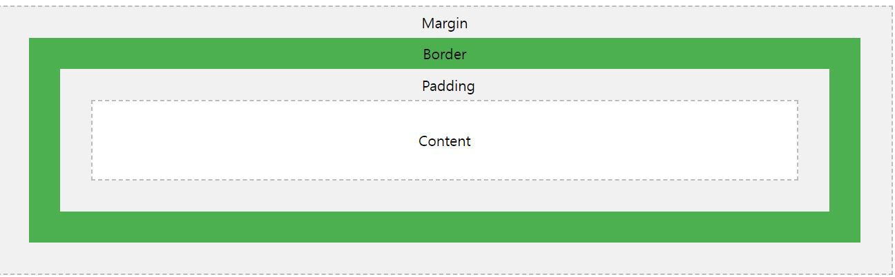

CSS BOX MODEL

- margin : 경계선 밖의 여백 영역 다른 요소와의 여백 지정시 사용
- border : 경계선
- padding : 경계선과 컨텐츠 사이의 여백 영역
- content : 표시되는 컨텐츠 내용
CSS 박스 모델은 HTML 문서를 구성하는
요소들을 브라우저에 그려서 나타내는데
일괄적으로 적용되는 모델입니다.
HTML 문서의 구성요소들은 단걔쩍으로 감싸고 잇는 형태로 구성되어 있으며
기준 요소 두가지는경꺠선을 나타내는 border 와 실제 출력 내용을 나타내는 content입니다
border 바깥영역을 margin
border와 content 사이 영엵을 padding 이라고 합니다.
이 div 영역에는 box_model애 따라
margin : top 10px, right 20px, bottom 40px, left 20px 적용
padding : 상하좌우 모두 25px 설정
이 div 크기는 가로 세로 300 x 300 으로 설정되었습니다.